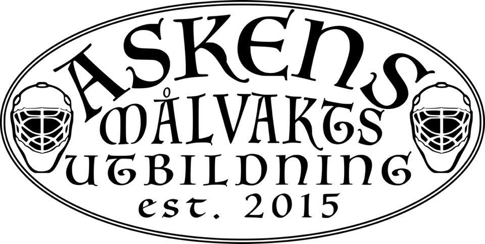
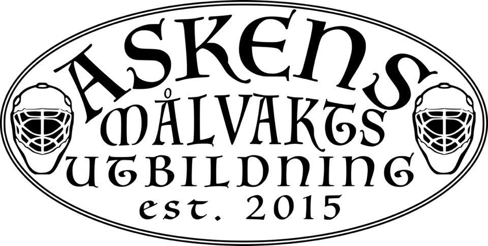

Vem är jag ?
 

Robin Asklöf heter jag och har sysslat med innebandy sedan jag var 7 år gammal.
Jag har 20 år av erfarenhet av att vara målvakt och sedan 2010 ägnat min tid åt att bli målvaktstränare.
Som aktiv målvakt har jag spelat i klubbar som IBK Succé (Linköping), KFUM Linköping, IBF Linköping, Åsenskogen IBK (Norge div.1), Sunde IL (Norge div.1) och FBI Tullinge där jag valde att lägga hjälmen på hyllan.
Som målvaktstränare har jag tränat FBI Tullinges damer (2010-2013) och Huddinge IK (SSL 2012-2015).
Filosofi?
Min filosofi är ganska enkel.
Grundtekniken är viktig och träningarna anpassas efter det.
Sen är det helt och hållet beroende på hur målvaktens förutsättningar är. Varje målvakt har sin egen stil och jag har ingen avsikt att ändra på deras stilar, däremot så kan man ALLTID förbättra deras nuvarande stil, det är där som jag kommer in.
Har ni ytterligare frågor?
Kontakta mig på:
askensmv@gmail.com
eller ring på:
076-3911156